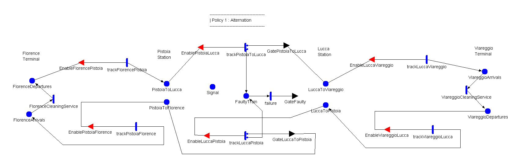

Model: Alternation

| Place Names | Initial Markings |
|---|---|
| FaultyTrain | |
| FlorenceArrivals | |
| FlorenceDepartures | |
| LuccaToPistoia | |
| LuccaToViareggio | |
| PistoiaToFlorence | |
| PistoiaToLucca | |
| Signal | |
| ViareggioArrivals | |
| ViareggioDepartures | |
| Timed Activity: | FlorenceCleaningService |
|---|---|
| Distribution Parameters | Rate2.0 |
| | |
| | |
| Timed Activity: | ViareggioCleaningService |
|---|---|
| Distribution Parameters | Rate2.0 |
| | |
| | |
| Timed Activity: | failure |
|---|---|
| Distribution Parameters | Rate2.0/3.0 |
| | |
| | |
| Timed Activity: | trackFlorencePistoia |
|---|---|
| Distribution Parameters | Rate2.0 |
| | |
| | |
| Timed Activity: | trackLuccaPistoia |
|---|---|
| Distribution Parameters | Rate1.5 |
| | |
| | |
| | case 11-hcase 2 h |
| Timed Activity: | trackLuccaViareggio |
|---|---|
| Distribution Parameters | Rate1.2 |
| | |
| | |
| Timed Activity: | trackPistoiaFlorence |
|---|---|
| Distribution Parameters | Rate2.0 |
| | |
| | |
| Timed Activity: | trackPistoiaToLucca |
|---|---|
| Distribution Parameters | Rate1.5 |
| | |
| | |
| | case 11-hcase 2 h |
| Timed Activity: | trackViareggioLucca |
|---|---|
| Distribution Parameters | Rate1.2 |
| | |
| | |
| Input Gate: | EnableFlorencePistoia |
|---|---|
| | ((PistoiaToLucca->Mark() + PistoiaToFlorence->Mark()) < P) && (FlorenceDepartures->Mark() > 0) |
| | FlorenceDepartures->Mark()--; |
| Input Gate: | EnableLuccaPistoia |
|---|---|
| | (FaultyTrain->Mark()==0) && ( PistoiaToLucca->Mark() < P +1 ) && (LuccaToPistoia->Mark() > 0) && (Signal->Mark()==0) |
| | LuccaToPistoia->Mark() --; |
| Input Gate: | EnableLuccaViareggio |
|---|---|
| | (LuccaToViareggio->Mark() > 0) |
| | LuccaToViareggio->Mark() --; |
| Input Gate: | EnablePistoiaFlorence |
|---|---|
| | ( PistoiaToFlorence->Mark() > 0 ) |
| | PistoiaToFlorence->Mark()--; |
| Input Gate: | EnablePistoiaLucca |
|---|---|
| | (FaultyTrain->Mark()==0) && (PistoiaToLucca->Mark() > 0) && ((LuccaToPistoia->Mark()+LuccaToViareggio->Mark()) < L+1) && (Signal->Mark()==1) |
| | PistoiaToLucca->Mark() --; |
| Input Gate: | EnableViareggioLucca |
|---|---|
| | ((LuccaToViareggio->Mark() + LuccaToPistoia->Mark()) < L) && (ViareggioDepartures->Mark() > 0) |
| | ViareggioDepartures->Mark() -- ; |
| Output Gate: | GateFaulty |
|---|---|
| |
if ( Signal->Mark()==1 ){
LuccaToViareggio->Mark() ++;
Signal->Mark()=0;
}else{
PistoiaToFlorence->Mark() ++;
Signal->Mark()=1;
}
|
| Output Gate: | GateLuccaToPistoia |
|---|---|
| | PistoiaToFlorence->Mark() ++; Signal->Mark()=1; |
| Output Gate: | GatePistoiaToLucca |
|---|---|
| | LuccaToViareggio->Mark() ++; Signal->Mark()=0; |